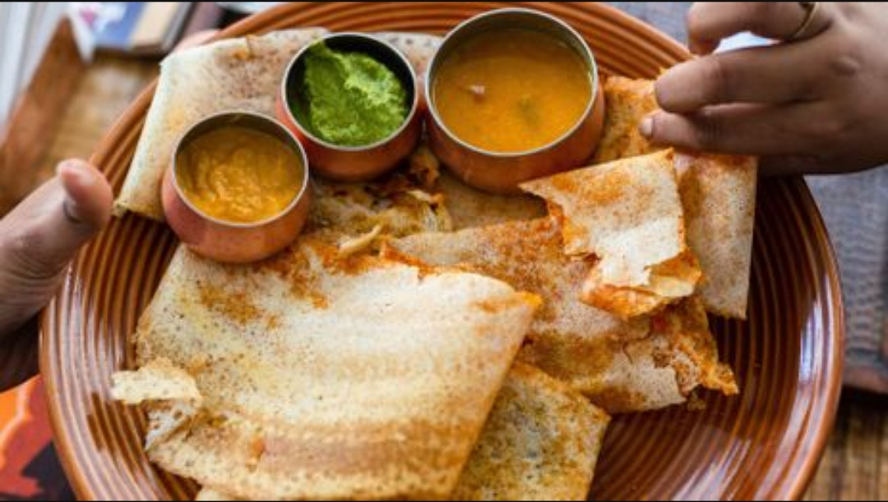
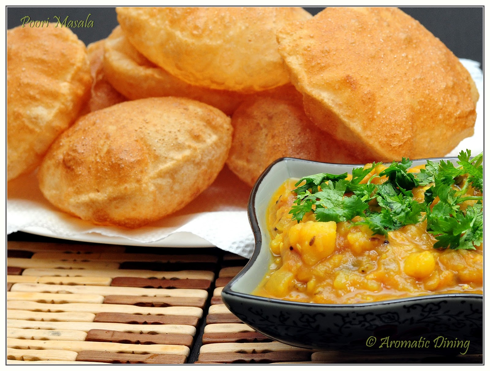
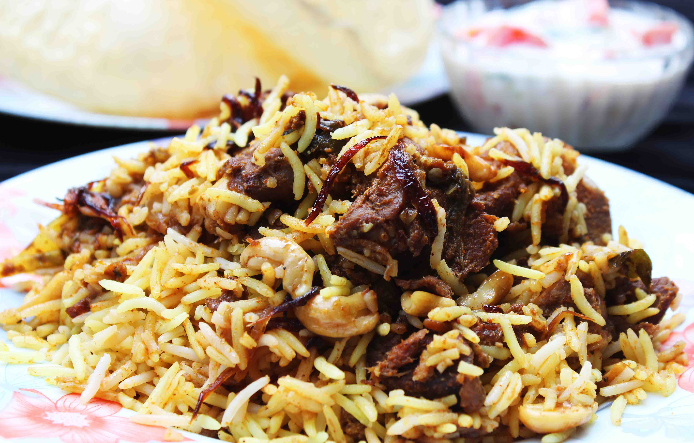
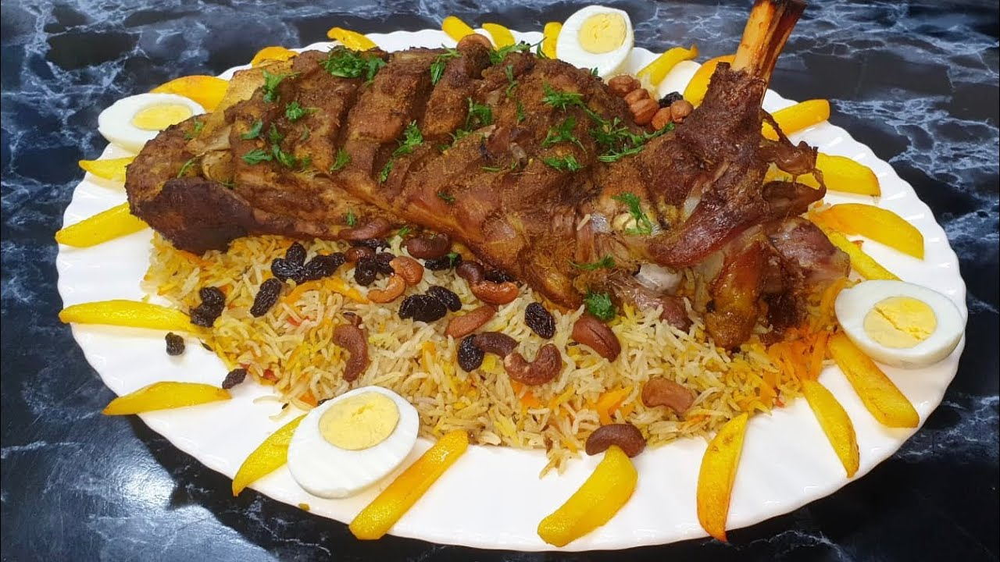
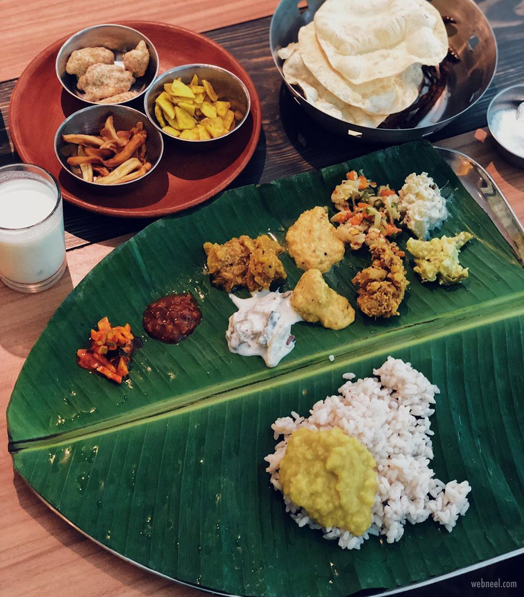
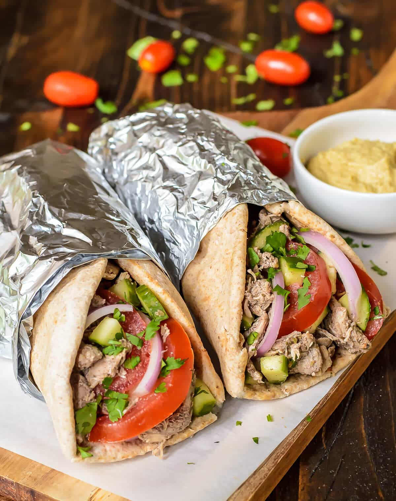

The soft fluffy idlis along with the fresh crispy vada served with spicy hot sambar and coconut chutney
is indeed an authentic combination. ... The vadas are usually made of urad dal, fresh coriander, green
chilies and ginger, finely chopped. The taste is indeed heartwarming!

DOSA
A dosa is a thin pancake or crepe originating from South India, made from a fermented batter
predominantly consisting of lentils and rice. ... Its main ingredients are rice and black gram, ground
together in a fine, smooth batter with a dash of salt, then fermented.

POORI
Puri (sometimes spelled as poori) is a deep-fried bread made from unleavened whole-wheat flour that
originated in the Indian subcontinent. It is eaten for breakfast or as a snack or light meal. It is
usually served with a savory curry or bhaji, as in puri bhaji, but may also be eaten with sweet dishes.

BIRIYANI
Simply put, biryani is a spiced mix of meat and rice, traditionally cooked over an open fire in a leather
pot. It is combined in different ways with a variety of components to create a number of highly tasty
and unique flavor combinations.

MUTTON MANDI
Originally an Arabic dish, this biryani has slowly found ways to be included in Bakri-Eid festivals all
around the world. It is cooked in mutton stock itself which is why every bite feels like a piece of
flavourful heaven.

ONAM SADHYA
The Sadya (also spelled as Sadhya) is a special traditional meal that is prepared on the auspicious
festival of Onam and is served on a banana leaf. It reflects the spirit of the season and is
traditionally made with seasonal vegetables such as yam, cucumber, ash gourd and so on.

SHAWARMA
Shawarma is thinly sliced cuts of meat, like chicken, beef, goat, lamb, and sometimes turkey rolled into
a large piece of flatbread or pita that has been steamed or heated. Inside the pita, foods like hummus,
tahini, pickles, vegetables, and even french fries are added
BURGERS
A hamburger (or burger for short) is a food, typically considered a sandwich, consisting of one or more
cooked patties—usually ground meat, typically beef—placed inside a sliced bread roll or bun. The patty
may be pan fried, grilled, smoked or flame broiled. ... A hamburger topped with cheese is called a
cheeseburger.
PORATTA BEEF
Parotta or Porotta is a Subcontinental layered flatbread made from Maida or Atta, alternatively known as
flaky ribbon pancake. ... It is prepared by kneading maida/wheat flour, egg (in some recipes), oil or
ghee and water.